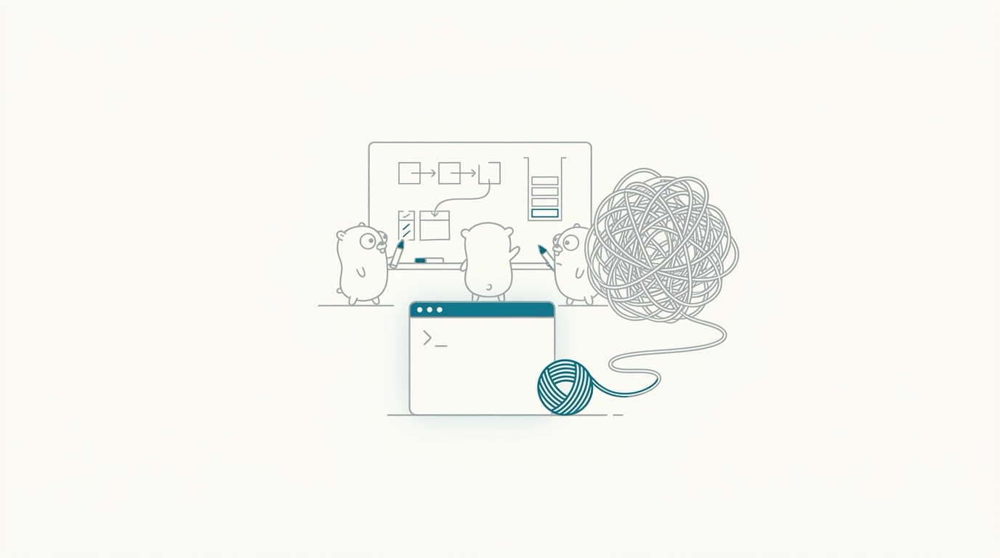

A BookBank Primer · Go
Let's Go
A first-principles primer for someone who has
never written a line of Go.

A clean, modern editorial illustration for the cover of a beginner's programming book about the Go language. A small, friendly gopher-like mascot silhouette (rounded, minimal, no brand logos or trademarked characters) sits beside a single glowing terminal window with a blinking cursor, on a wide expanse of white/cream negative space. Restrained muted-teal/cyan accent color (#0e7a94) as the only strong color, everything else soft grey-on-white line work. Flat vector style, generous whitespace, no text baked in, minimal and calm rather than busy. Target size ~1280x720px, 16:9 landscape; compose for a small on-page cover figure with the subject centred and safe margins — it is letterboxed into a 16:9 box, so keep nothing important near the edges.
Generate with your image agent, then drop the file here.
Told by a professor who thinks out loud —
first principles first, syntax last.
The Path
What we'll cover
Ten short chapters, each built on the one before it. We spend almost no time on syntax — that's what the cheatsheet is for. Instead we build a working mental model of how Go actually thinks.
- Why Go?A philosophy, not just a syntax
- Zero ValuesNothing is ever undefined
- Arrays vs. SlicesThe secret header · animated
- Structs & MethodsData with behavior attached
- InterfacesShape, not ancestry
- Errors Are Just ValuesNo exceptions, no surprises
- Defer, Panic & RecoverGo's safety net · animated
- Goroutines & ChannelsConcurrency you can picture · animated
- EmbeddingComposition, not inheritance
- Packages, Modules & the ToolchainOne tool for everything
- CheatsheetEvery syntax detail, one page